સમય:
ટિકિટ:
અંતર:
દ્વારકાધીશ જગત મંદિર, ૫૨ ગજની ધજાનું આધ્યાત્મિક રહસ્ય, ગોમતી ઘાટ, બેટ દ્વારકા, શિવરાજપુર બીચ, નાગેશ્વર જ્યોતિર્લિંગ, સંપૂર્ણ પ્રવાસ સમયપત્રક, નોર્મલ હોટેલ અને ગુજરાતી કાઠિયાવાડી ભોજન બજેટની અધિકૃત માર્ગદર્શિકા.
બદ્રીનાથ, પુરી, રામેશ્વરમ સાથે મોક્ષદાયી
શિખર પર દિવસમાં ૬ વખત ચઢાવવામાં આવતી ધજા
મહાભારત કાળ અને સમુદ્ર તળેના અવશેષો
વાર્ષિક દર્શનાર્થીઓ અને શ્રદ્ધાળુઓ
દ્વારકા એટલે "મોક્ષનું દ્વાર" — ભગવાન શ્રીકૃષ્ણની કર્મભૂમિ, સુવર્ણ રાજધાની અને સનાતન સંસ્કૃતિનું પરમ પવિત્ર કેન્દ્ર.
આદિ શંકરાચાર્ય દ્વારા નિર્ધારિત ભારતના ચાર પરમ પવિત્ર ધામોમાં દ્વારકા પશ્ચિમ દિશાનું મુખ્ય ધામ છે. જીવનમાં એકવાર દ્વારકા યાત્રા કરવાથી જન્મ-મરણના ફેરામાંથી મુક્તિ મળે છે તેવી અતૂટ ધાર્મિક માન્યતા છે.
પુરાણો અનુસાર ભારતમાં ૭ નગરીઓ મોક્ષ આપનારી છે: અયોધ્યા, મથુરા, માયા (હરિદ્વાર), કાશી, કાંચી, અવંતિકા (ઉજ્જૈન) અને દ્વારાવતી (દ્વારકા). આ સપ્તપુરીઓમાં દ્વારકાનું સ્થાન અદ્વિતીય છે.
મથુરા છોડ્યા બાદ ભગવાન શ્રીકૃષ્ણએ યાદવ સેના અને પ્રજાના રક્ષણ માટે સૌરાષ્ટ્રના પશ્ચિમ સાગરકાંઠે દેવશિલ્પી વિશ્વકર્મા પાસે સ્વર્ણ દ્વારકાનું નિર્માણ કરાવ્યું હતું, જ્યાં શ્રીકૃષ્ણ રાજાધિરાજ તરીકે પૂજાયા.
દ્વારકામાં પવિત્ર ગોમતી નદી અને અરબી સમુદ્રનો અદ્ભુત સંગમ થાય છે. ગોમતી ઘાટ પર સ્નાન કરી ૫૬ પગથિયાં ચઢી સ્વર્ગ દ્વારથી મંદિરમાં દર્શન કરવા જવાની પૌરાણિક પરંપરા વર્ષોથી ચાલી આવે છે.
દ્વારકામાં મુખ્ય મંદિર શ્રી દ્વારકાધીશ જગત મંદિર છે, જ્યાં ભગવાન શ્રીકૃષ્ણ "રાજાધિરાજ" સ્વરૂપે બિરાજમાન છે.
આ મંદિર ૫ માળનું ભવ્ય સ્થાપત્ય છે જે ચૂનાના પથ્થરોથી બનેલું છે અને ૭૨ કલાત્મક સ્તંભો પર ટકેલું છે. ગર્ભગૃહમાં કાળા કસોટીના પથ્થરથી કંડારેલી ભગવાન શ્રીકૃષ્ણની ચતુર્ભુજ શ્યામ મૂર્તિ બિરાજમાન છે, જેમના ચાર હાથમાં શંખ, સુદર્શન ચક્ર, ગદા અને પદ્મ (કમળ) સુશોભિત છે.
મંદિર સવારે ૬:૩૦ થી બપોરે ૧:૦૦ અને સાંજે ૫:૦૦ થી રાત્રે ૯:૩૦ વાગ્યા સુધી દર્શન માટે ખુલ્લું રહે છે.
| આરતી / દર્શનનું નામ | સમય (Timing) | ધાર્મિક મહત્વ અને વિગત |
|---|---|---|
| મંગળા આરતી (Mangla Aarti) | સવારે ૬:૩૦ વાગ્યે | પ્રભાત કાળે ભગવાનને જગાડીને કરવામાં આવતી પ્રથમ મંગલકારી દિવ્ય આરતી. |
| શૃંગાર દર્શન & આરતી (Shringar Aarti) | સવારે ૭:૩૦ થી ૮:૦૦ વાગ્યે | ભગવાન શ્રીકૃષ્ણનું સિંહાસન પર પીતાંબર, મોરપીંછ અને સુવર્ણ આભૂષણો સાથે અલૌકિક શૃંગાર. |
| રાજભોગ દર્શન & આરતી (Rajbhog Aarti) | બપોરે ૧૨:૦૦ થી ૧૨:૩૦ વાગ્યે | ઠાકોરજીને ૫૬ ભોગ અને રાજભોગ ધરાવીને કરવામાં આવતી ભવ્ય આરતી (૧:૦૦ વાગ્યે મંદિર મંગલ થાય છે). |
| ઉત્થાપન દર્શન (Utthapan) | સાંજે ૫:૦૦ વાગ્યે | બપોરના વિશ્રામ બાદ સાંજે ભક્તો માટે પુનઃ મંદિરના કપાટ ખુલે છે. |
| સંધ્યા આરતી (Sandhya Aarti) | સાંજે ૭:૩૦ થી ૭:૪૫ વાગ્યે | સૂર્યાસ્ત સમયે દીપમાળા પ્રગટાવીને થતી ભવ્ય આરતી અને શંખનાદ. |
| શયન ભોગ & શયન આરતી (Shayan Aarti) | રાત્રે ૮:૩૦ થી ૯:૦૦ વાગ્યે | રાત્રિ ભોગ અર્પણ કર્યા બાદ ભગવાનના વિશ્રામ પૂર્વેની આરતી (૯:૩૦ વાગ્યે મંદિર મંગલ). |
દ્વાપર યુગમાં વિશ્વકર્મા દ્વારા સોનાની નગરીના નિર્માણથી લઈને અરબી સમુદ્રના પેટાળમાં ડૂબેલી દ્વારકાના આધુનિક સંશોધન સુધીનો રોમાંચક પ્રવાસ.
મથુરાના રાજા કંસના વધ બાદ જરાસંધના વારંવારના આક્રમણોથી મથુરાવાસીઓને સુરક્ષિત કરવા શ્રીકૃષ્ણએ યાદવો સાથે સૌરાષ્ટ્રના પશ્ચિમ સમુદ્રકાંઠે પ્રસ્થાન કર્યું. દેવશિલ્પી વિશ્વકર્મા દ્વારા સમુદ્ર પાસેથી ૧૨ યોજન જમીન માંગી સોનાની અદ્ભુત નગરી "સ્વર્ણ દ્વારિકા" બનાવી, જેમાં સેંકડો ભવ્ય મહેલો, સુવર્ણ કિલ્લાઓ અને બગીચાઓ હતા.
દ્વારકા શ્રીકૃષ્ણના રાજ્યકાળ દરમિયાન ભારતના સૌથી સમૃદ્ધ અને શક્તિશાળી સામ્રાજ્ય તરીકે ઉભરી આવી. મહાભારતના ભીષણ યુદ્ધ બાદ ગાંધારીના શ્રાપ અને ઋષિઓના શાપને લીધે યાદવાસ્થળી સર્જાઈ.
ભગવાન શ્રીકૃષ્ણ ભાલકા તીર્થ (પ્રભાસ પાટણ) ખાતે સ્વધામ પધાર્યા બાદ અર્જુન દ્વારા યાદવ સ્ત્રી-બાળકોને સુરક્ષિત હસ્તિનાપુર લઈ જવાયા. ત્યારપછી તરત જ પ્રચંડ સુનામી અને દરિયાના મોજાં ઉછળ્યા અને ભવ્ય સ્વર્ણ દ્વારકા સમુદ્રના ગર્ભમાં સમાઈ ગઈ.
શ્રીકૃષ્ણના પ્રપૌત્ર વજ્રનાભ દ્વારા ભગવાનના મૂળ નિવાસ સ્થાન (હરિ ગૃહ) પર પ્રથમ છત્ર/મંદિરનું નિર્માણ કરાયું, જે "જગત મંદિર" તરીકે ઓળખાયું.
જગતગુરુ આદિ શંકરાચાર્યજીએ સનાતન ધર્મના પુનરુત્થાન માટે ભારતના પશ્ચિમ ખૂણે દ્વારકામાં "શારદા પીઠ"ની સ્થાપના કરી, જેનાથી દ્વારકા ચાર ધામ પૈકીનું એક મુખ્ય ધામ બન્યું.
સમય જતાં વિવિધ આક્રમણો અને કુદરતી આપત્તિઓ વચ્ચે પણ ભક્તો અને રાજાઓએ મંદિરનું પુનઃનિર્માણ કર્યું. વર્તમાન મંદિર ચાલુક્ય શૈલી અને ૭૨ કલાત્મક સ્તંભો પર ચૂનાના પથ્થરોથી શોભી રહ્યું છે.
પ્રખ્યાત પુરાતત્વવિદ્ ડૉ. એસ. આર. રાવ (ડૉ. એસ.આર. રાવ) અને ભારતીય નેવી દ્વારા સમુદ્રના પેટાળમાં સંશોધન કરાયું, જેમાં પ્રાચીન કિલ્લાની દીવાલો, ૫૦૦૦ વર્ષ જૂના પથ્થરના લંગર (Anchors) અને વાસણો મળ્યા. ૨૦૨૪માં ભારતના વડાપ્રધાન શ્રી નરેન્દ્ર મોદીજીએ સમુદ્રના તળિયે સ્કૂબા ડાઇવિંગ કરી મોરપીંછ અર્પણ કરી પ્રાચીન દ્વારકાની પૂજા કરી હતી.
પ્રખ્યાત પુરાતત્વશાસ્ત્રી ડૉ. એસ. આર. રાવ (Marine Archaeology Unit, NIO) દ્વારા દ્વારકાના દરિયાકિનારે ૧૯૮૩ થી ૧૯૯૦ દરમિયાન ઉત્ખનન કરવામાં આવ્યું હતું. સમુદ્રના તળિયેથી વિશાળ પથ્થરના કિલ્લાના અવશેષો, ત્રિકોણાકાર પથ્થરના લંગર (Ship Anchors), માટીના વાસણો અને ગોળ સ્તંભો મળી આવ્યા હતા જે ૫૦૦૦ વર્ષ જૂની સભ્યતા સાબિત કરે છે. ફેબ્રુઆરી ૨૦૨૪માં ભારતના વડાપ્રધાન શ્રી નરેન્દ્ર મોદીજીએ દ્વારકાના દરિયામાં સ્કૂબા ડાઇવિંગ કરીને પ્રાચીન જળમગ્ન દ્વારકા નગરીના દર્શન કર્યા હતા અને મોરપીંછ અર્પણ કરીને પૂજા કરી હતી.
દ્વારકા શહેરમાં આવેલા પવિત્ર તીર્થો તથા આજુબાજુના આકર્ષક સ્થળો જેમ કે બેટ દ્વારકા, નાગેશ્વર અને શિવરાજપુર બીચ.
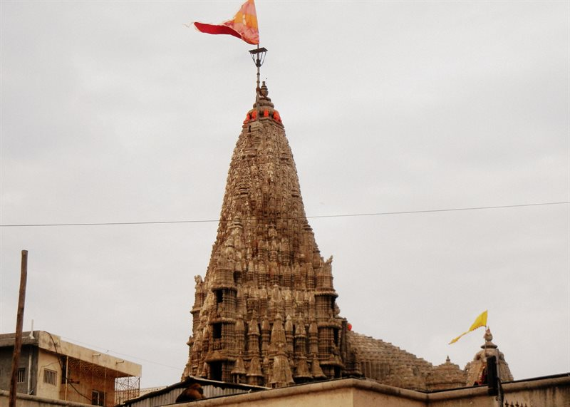
દ્વારકા શહેરમાંહિન્દુ ધર્મના પવિત્ર ચાર ધામ પૈકીનું પશ્ચિમ ધામ, ૭૨ સ્તંભો પર નિર્મિત ભવ્ય ૫ માળનું પૌરાણિક મંદિર.
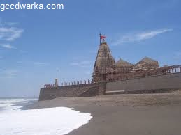
દ્વારકા શહેરમાંગોમતી નદી અને અરબી સમુદ્રનો પવિત્ર સંગમ, જ્યાં સ્નાન કરવાનું મોક્ષદાયી મહત્વ છે.
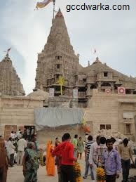
દ્વારકા શહેરમાંગોમતી નદી પર બનેલો આધુનિક કેબલ સસ્પેન્શન બ્રિજ, જે પંચનદ તીર્થ અને સમુદ્રતટ તરફ લઈ જાય છે.
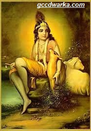
દ્વારકા શહેરમાંઅરબી સમુદ્રની વચ્ચે એક નાની ટેકરી પર સ્થિત અતિ સુંદર પ્રાચીન શિવ મંદિર.
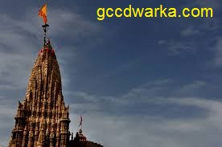
દ્વારકા શહેરમાંઅરબી સમુદ્રનો શાંત કિનારો અને ૪૩ મીટર ઊંચી ઐતિહાસિક દીવાદાંડી.
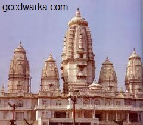
દ્વારકા શહેરમાંબિરલા પરિવાર દ્વારા સંગેમરમરથી નિર્મિત ગીતા મંદિર અને આદિ શંકરાચાર્ય દ્વારા સ્થાપિત શારદા પીઠ.
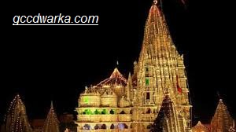
દ્વારકા નજીક (દ્વારકાથી ૩૨ કિ.મી. + બોટ/બ્રિજ)ભગવાન શ્રીકૃષ્ણનું પ્રાચીન રહેઠાણ અને જ્યાં સુદામાજી તાંદુલ (પૌંઆ) લઈને મળવા આવ્યા હતા તે પવિત્ર બેટ.
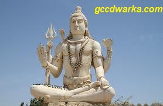
દ્વારકા નજીક (દ્વારકાથી ૧૬ કિ.મી.)હિન્દુ ધર્મના અત્યંત પવિત્ર ૧૨ જ્યોતિર્લિંગ પૈકીનું એક દિવ્ય જ્યોતિર્લિંગ અને ભગવાન શિવની ૮૨ ફૂટ ઊંચી પ્રતિમા.
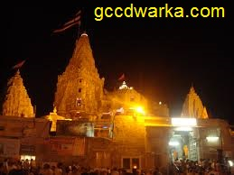
દ્વારકા નજીક (દ્વારકાથી ૧૨ કિ.મી.)આંતરરાષ્ટ્રીય કક્ષાનું "Blue Flag" પ્રમાણપત્ર ધરાવતો ગુજરાતનો સૌથી સ્વચ્છ અને સુંદર સફેદ રેતીનો દરિયાકિનારો.
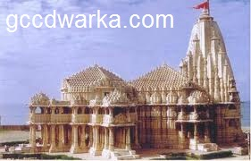
દ્વારકા નજીક (દ્વારકાથી ૨.૫ કિ.મી.)દ્વારકાધીશ મંદિરથી અલગ ૨.૫ કિમી દૂર સ્થિત ૧૨મી સદીનું પ્રાચીન કલાત્મક મંદિર.
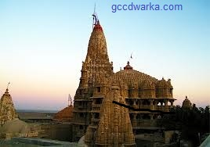
દ્વારકા નજીક (દ્વારકાથી ૨૧ કિ.મી.)જ્યાં શ્રીકૃષ્ણ સાથે રાસલીલા બાદ ગોપીઓ પવિત્ર જમીનમાં સમાઈ ગઈ હતી તે તળાવ, જ્યાંથી પીળી માટી (ગોપી ચંદન) મળે છે.
તમારા પ્રવાસના દિવસો મુજબ સુવ્યવસ્થિત કલાક-દર-કલાકનો ટૂર પ્લાન જેથી તમારા સમય અને પૈસાની બચત થાય.
સવારે ૬:૦૦ વાગ્યે ગોમતી ઘાટ પર પવિત્ર સ્નાન કરી ૫૬ પગથિયાં ચઢી સ્વર્ગ દ્વારથી જગત મંદિરમાં પ્રવેશ કરો. મંગળા આરતી અને શૃંગાર દર્શનનો લાભ લો. બાદમાં સુદામા સેતુ અને પંચનદ તીર્થની મુલાકાત લો.
કાઠિયાવાડી/ગુજરાતી થાળી જમીને લોકલ ટેક્સી કે બસ દ્વારા નાગેશ્વર જ્યોતિર્લિંગ દર્શન માટે નીકળો. ત્યાંથી ઓખા પહોંચી સુદર્શન સેતુ દ્વારા બેટ દ્વારકા દર્શન કરો. રસ્તામાં ગોપી તળાવ પણ જઈ શકો છો.
પરત દ્વારકા આવી રુક્ષ્મણી માતાજીના દર્શન કરો. ભડકેશ્વર મહાદેવ ખાતે દરિયા વચ્ચે સુંદર સૂર્યાસ્ત માણો. રાત્રે દ્વારકાધીશ મંદિરમાં સંધ્યા આરતીના દર્શન કરી સ્થાનિક બજારમાં ખરીદી કરો.
સામાન્ય હોટેલ, ધર્મશાળા, નોર્મલ ગુજરાતી અને કાઠિયાવાડી ભોજન તથા લોકલ વાહન વ્યવહારના વાસ્તવિક દરો.
તમારા દિવસો અને વ્યક્તિઓની સંખ્યા પસંદ કરીને તમારા પ્રવાસનો અંદાજિત લાઈવ ખર્ચ ગણો.
દ્વારકા રેલવે, હવાઈ અને સડક માર્ગે સમગ્ર ગુજરાત અને દેશના મુખ્ય શહેરો સાથે સુગમ રીતે જોડાયેલું છે.
દ્વારકા રેલવે સ્ટેશન (DWK) મંદિરથી માત્ર ૨.૫ કિ.મી. દૂર છે. અમદાવાદ, રાજકોટ, સુરત, મુંબઈ, દિલ્હી, વારાણસી અને પુણેથી સીધી એક્સપ્રેસ અને સુપરફાસ્ટ ટ્રેનો ઉપલબ્ધ છે. સ્ટેશન બહારથી સતત રિક્ષાઓ મળે છે.
સૌથી નજીકનું ડોમેસ્ટિક એરપોર્ટ જામનગર (Jamnagar - ૧૩૫ કિ.મી.) અને પોરબંદર (૧૦૦ કિ.મી.) છે. મોટા આંતરરાષ્ટ્રીય જોડાણ માટે રાજકોટ ઇન્ટરનેશનલ એરપોર્ટ (Hirasar - ૨૩૦ કિ.મી.) શ્રેષ્ઠ વિકલ્પ છે.
ગુજરાત રાજ્ય પરિવહન (GSRTC) ની વોલ્વો, સ્લીપર અને એક્સપ્રેસ બસો અમદાવાદ, રાજકોટ, જામનગર, સોમનાથ, જૂનાગઢથી સીધી દ્વારકા આવે છે. ફોર-લેન હાઇવે હોવાથી પોતાની કાર દ્વારા મુસાફરી પણ ખૂબ આરામદાયક છે.
ઓક્ટોબર થી માર્ચ: આહલાદક શિયાળાની ઋતુ. ઉપરાંત જન્માષ્ટમી (શ્રાવણ વદ આઠમ) નો મહોત્સવ દ્વારકામાં અતિ ભવ્યતાથી ઉજવાય છે.
તમારો દ્વારકા યાત્રાનો અનુભવ શેર કરો અથવા કોઈ પ્રશ્ન હોય તો પૂછો (ડેટાબેઝમાં સેવ થાય છે).
દ્વારકાની યાત્રા ખૂબ બજેટ-ફ્રેન્ડલી છે. ધર્મશાળામાં ₹૫૦૦-૬૦૦ માં સારો રૂમ મળી ગયો અને ₹૧૨૦ માં ઉત્તમ કાઠિયાવાડી થાળી મળી.
07 Oct, 2026સુદર્શન સેતુ બ્રિજ ખૂબ જ સરસ બન્યો છે. બેટ દ્વારકા જવું હવે ખૂબ સરળ થઈ ગયું છે. શિવરાજપુર બીચનું પાણી ગોવા કરતાં પણ ચોખ્ખું છે!
07 Oct, 2026દ્વારકામાં જગત મંદિરના દર્શન કરીને જીવન ધન્ય થઈ ગયું! ૫૨ ગજની ધજા અને ગોમતી ઘાટની સાંજ અદ્ભુત હતી. સામાન્ય હોટેલ અને ગુજરાતી થાળી ખૂબ સસ્તા અને સ્વાદિષ્ટ હતા.
07 Oct, 2026